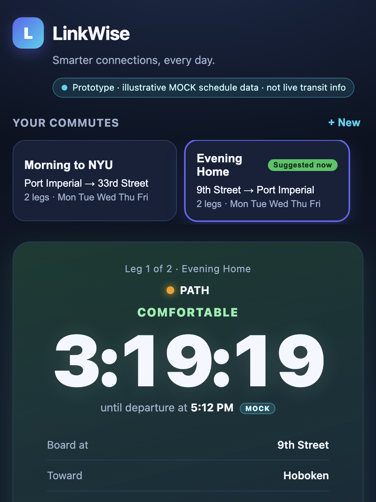
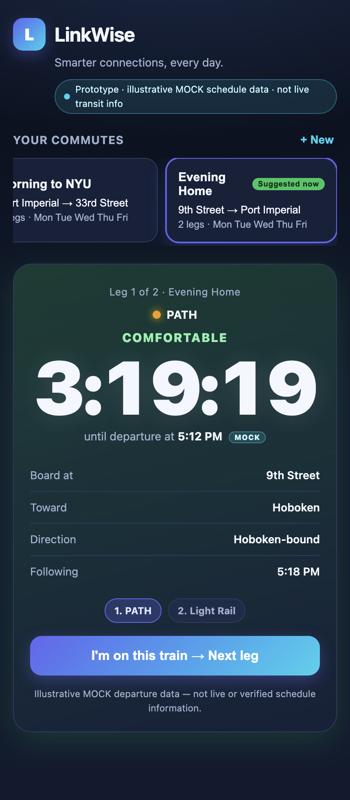
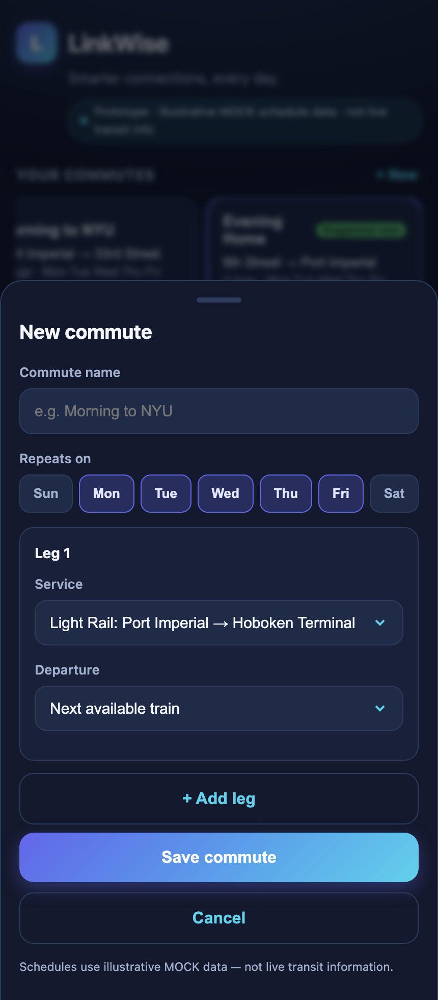
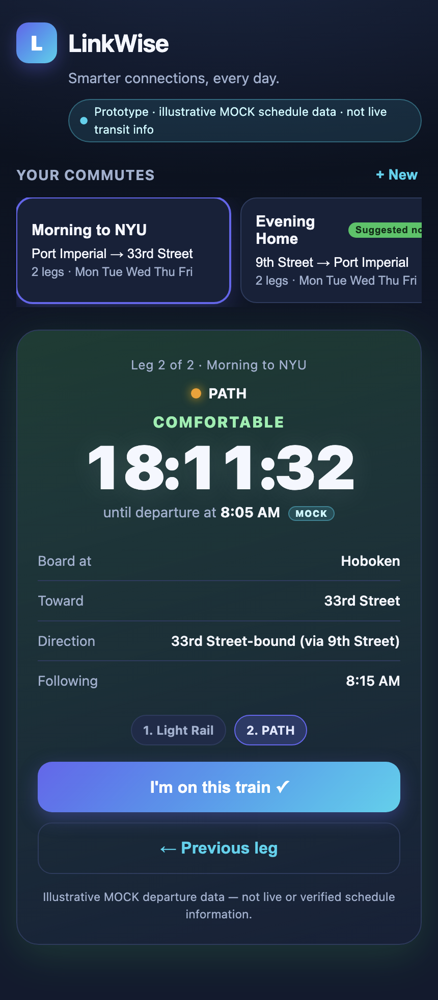
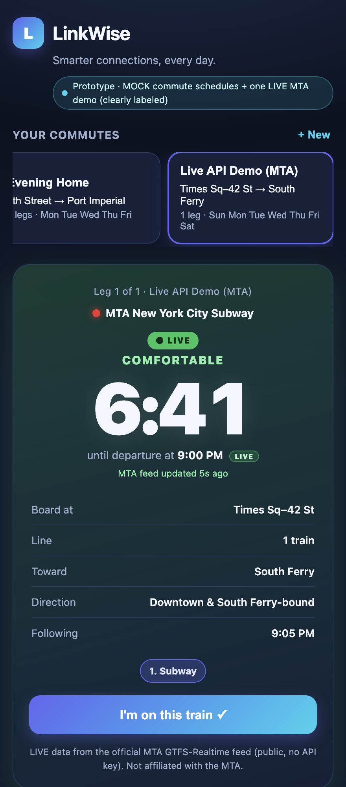

Smarter connections, every day. — a personalized commuter assistant that helps NJ–NYC riders catch their transit connections through large, colorful departure countdowns.
Current Status: Pivoted to LinkWise — live static app published on GitHub Pages (also runs locally).
Try it: Open the live LinkWise app → (served from this same site at /app/). Screenshots below are captured from the running docs/app/index.html app.




Long-term vision: LinkWise is a personalized commute assistant — Smarter connections, every day. It helps people who ride the same NJ–NYC routes daily make smarter connections with real-time departure countdowns, saved daily routes, and personalized preferences across PATH, NJ Transit Rail, and Hudson-Bergen Light Rail. Future versions add location-triggered alerts, verified platform/track assignments, crowding estimates, speed-vs-comfort recommendations, and live operator integrations.
Current build scope (this prototype): A personalized countdown assistant. The rider saves named multi-leg commutes with recurring weekdays; the dashboard suggests the right commute for the current day and time (or the rider switches manually); a large, colorful per-second countdown shows the next train’s boarding station, destination, direction, and operator; the rider taps “I'm on this train” to advance through legs; and when a departure passes, the countdown rolls to the next eligible one. Commutes persist in localStorage. PATH / NJ Transit / Hudson-Bergen Light Rail commutes use illustrative MOCK schedule data; one clearly-labeled “Live API Demo (MTA)” commute connects to the official MTA GTFS-Realtime feed as a real-API proof of concept. Broader live PATH/NJ Transit integration, location alerts, and platform/crowding data remain out of scope for this build.
Who is this for? NJ-resident NYU classmates and friends who commute into Manhattan via PATH, NJ Transit Rail, and Hudson-Bergen Light Rail. They ride the same routes daily and are reachable in person on campus, so I can watch them use it on a real morning or evening commute.
The painful "Before" workflow: A door-to-door commute chains multiple operators and transfers. Riders check separate apps and schedules, do mental math on “can I still make it?”, and risk missing a tight connection — with no single, glanceable view of how long until their specific next train leaves.
The "After" workflow with this product: The rider opens LinkWise, which already shows the right commute for right now, and sees one big countdown to their next train — with the exact station, direction, and operator. They tap “I'm on this train” to advance to the next leg, and if they miss one, the countdown simply rolls to the following departure.
ScheduleService seam.Biggest technical risk: Real-time transit data availability and reliability. Live feeds can be unreachable, CORS-blocked, stale, empty, or rate-limited — and for our actual corridor, PATH has no official public real-time feed and NJ Transit’s is gated behind registration (verified during Build 2). If the countdown ever showed a confidently-wrong “next train,” the product would lose trust.
How this integration tests that risk: We integrated the one official, credential-free, CORS-enabled real-time feed we could verify — MTA GTFS-Realtime — and built the UI to be honest about data provenance: a LIVE badge with feed-age only when a fresh response parses successfully, an explicit UNAVAILABLE state (with reason) on failure/stale/empty responses instead of guessing, and MOCK labels everywhere else. This proves the end-to-end real-API path (fetch → parse → freshness-check → countdown) and the failure handling that any future PATH/NJT integration will need.
Why MTA as the proof of concept (and why PATH/NJT remain future work): Build 2 needs one reliable, working real API without paid services or app-embedded credentials. PATH’s official GTFS has no linked real-time feed and its static schedule was expired/CORS-blocked; NJ Transit’s API requires an account/token and its HBLR real-time coverage was unverifiable. MTA’s GTFS-Realtime is official, key-free, and returns access-control-allow-origin: *, so it works directly from a static page. It’s a technical proof of concept for the real-time countdown; swapping in PATH/NJT later is a ScheduleService-only change once an accessible feed exists.
Full user action tested: On the dashboard the rider selects the “Live API Demo (MTA)” commute → the app fetches and parses the live MTA feed → a large per-second countdown shows the actual next downtown 1-train departure from Times Sq–42 St (station, line, direction, next + following), labeled LIVE with feed freshness → a viewed_live_countdown PostHog event is captured. If the feed fails, the same action yields a clear UNAVAILABLE state.
Architecture & data flow: ScheduleService is still the single data seam. MOCK legs read bundled schedules from docs/app/data/mock_schedule.json; the one "live": true service instead calls ScheduleService.refreshLive() → fetch(MTA GTFS-Realtime) → a dependency-free protobuf decoder (parseMtaDepartures) extracts the FeedHeader timestamp and this stop’s departures → a freshness check (reject if older than 90s) → results feed the existing countdown engine unchanged. A ~25s background poll refreshes live data; the 1-second tick is shared with mock legs. No server and no Cloudflare Worker were needed (the MTA feed is CORS-enabled). The real-data adapter is covered by a focused test against a captured feed fixture (tests/schedule_logic.test.js, tests/fixtures/mta_gtfs_123.pb).
Estimated cost per API request: $0.00 — the MTA GTFS-Realtime feed is free and requires no API key; requests go directly from the browser with no server or paid proxy. The only “cost” is bandwidth (~70–105 KB per poll, roughly every 25s while the live commute is open).
$pageview, clicked_try_product, viewed_live_countdown, and session replay all received. (Visitor counts not yet tabulated.)ScheduleService seam (mock data now, real APIs later) and deterministic Node tests (tests/schedule_logic.test.js, 18 passing). Replaced mock_fares.json with mock_schedule.json (old data preserved in Git history).ScheduleService made the mock-to-live path a one-module change, and driving a headless browser (no new dependencies) let me verify the app actually boots and renders, not just that the syntax is valid.app/ — a simulated unified transit commerce flow: select a multi-operator journey → combined ticket basket (held passes cover matching legs at $0) → simulated checkout → persistent journey wallet of DEMO tickets. Built in the navy/purple theme, reusing prior data and render patterns. Added real screenshots of the running prototype (populated multi-operator basket and simulated journey wallet) to this Product Page. PRD updated with the “One journey. One payment. Every ride.” vision (Checkout / Handoff / Bundles), reachable user, before/after workflow, core workflow, three non-goals, and the vision-vs-Build-1 distinction.app.js/JSON could run against new markup and silently fail — now cache-busted on load with a visible error banner if the mock data can’t be fetched; and (2) pass coverage that incorrectly covered every route an agency operates — coverage now requires both a matching transit system and an explicitly eligible route, defaulting to “not covered” when eligibility is unknown (verified against covered and uncovered journeys).localStorage) and the interactive, per-second departure countdown that rolls to the next eligible train and advances leg-by-leg. Added the PostHog JS SDK (HTML-snippet method, US Cloud) to both the Product Page and the app, wired a custom clicked_try_product event on the “Try LinkWise” button, and added privacy controls for session replay (input/commute-name masking plus a tester notice with a “Decline recording” opt-out). Verified locally that the app loads with no console errors, the countdown ticks every second, saved commutes persist across refresh, the PostHog SDK initializes, and the opt-out disables recording. Automated tests passed 18/18 at this stage (later expanded to 25/25 with the MTA adapter — see below; node tests/schedule_logic.test.js).viewed_live_countdown PostHog event fires when a live countdown is shown. This is a technical proof of concept for the real-time countdown: PATH has no official public real-time feed and NJ Transit’s requires registration (both verified this week), so those commutes stay MOCK and PATH/NJT integrations remain future work. Automated tests now pass 25/25, including a focused test of the MTA adapter against a captured real-feed fixture.$pageview, the custom clicked_try_product event (Try LinkWise button), and the custom viewed_live_countdown event (shown when the live MTA countdown renders). Session replay was enabled and verified, with inputs/commute names masked and the tester “Decline recording” opt-out working. No open verification items remain for Build 2 analytics.ScheduleService seam so mock schedule data can later be swapped for live operator feeds — and used it in Build 2 to add one real LIVE MTA leg. PATH / NJ Transit / HBLR times remain clearly labeled MOCK; only the labeled MTA demo is live.